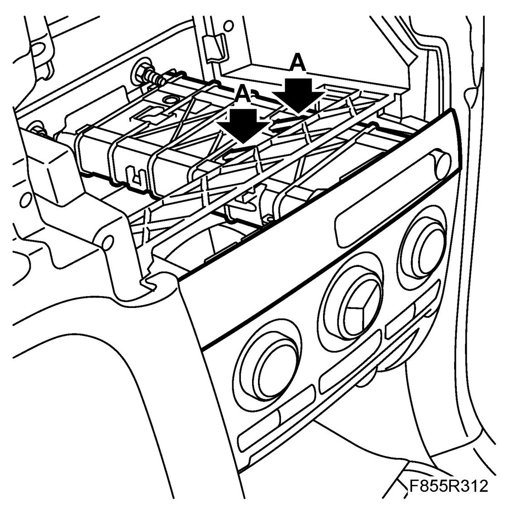
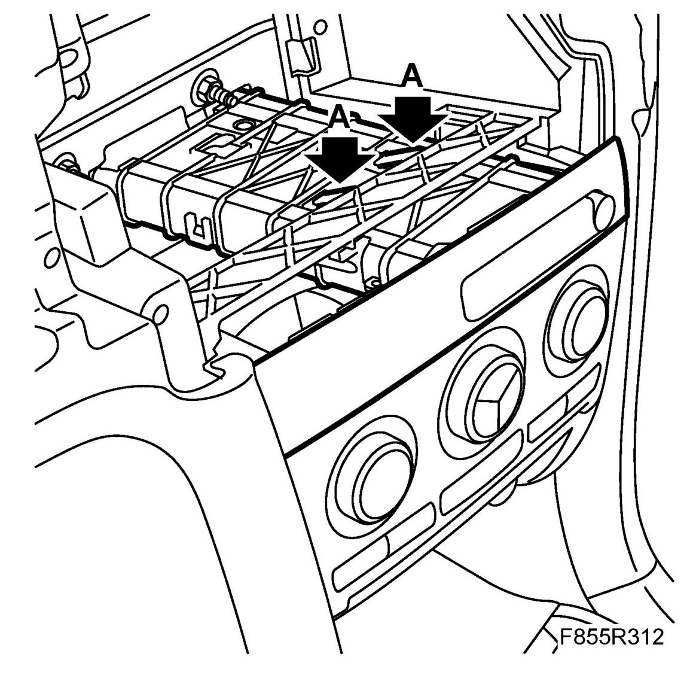

Drink Holders: Service and Repair
Dashboard Cup Holder
To remove
1. Remove the MIU frame.
2. Press down the locking lugs (A) on the top and on the outside. Pull out the cup holder.

3. Cars with OnStar panel: Unplug the OnStar panel.
4. Remove the cup holder.
5. Cars with OnStar panel: Separate the OnStar panel and cup holder.
To fit
1. Cars with OnStar panel: Fit the OnStar panel to the cup holder.
2. Cars with OnStar panel: Insert the cup holder into the dashboard and connect the OnStar panel.
3. Fit the cup holder into dashboard. Make sure the locking lugs (A) engage.

4. Fit the MIU frame.